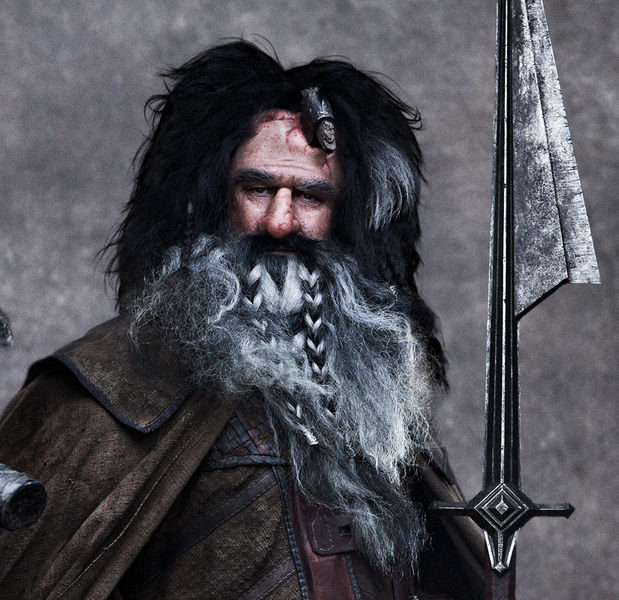

Whilst he was a descendant of the Dwarves of Khazad-dûm, Bifur was not of Durin's Folk. Most of his familial relations are unclear, and what is known of his parents is very little. He and his family were driven out of their home in the Lonely Mountain by the Dragon Smaug, and were forced to live in exile, where the Dwarf warrior worked as a toy maker. Following Thorin II Oakenshield to a new life in the Blue Mountains, he continued his life as a toy maker.
